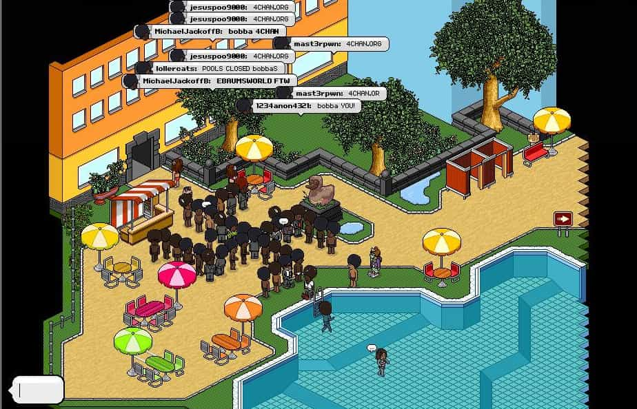
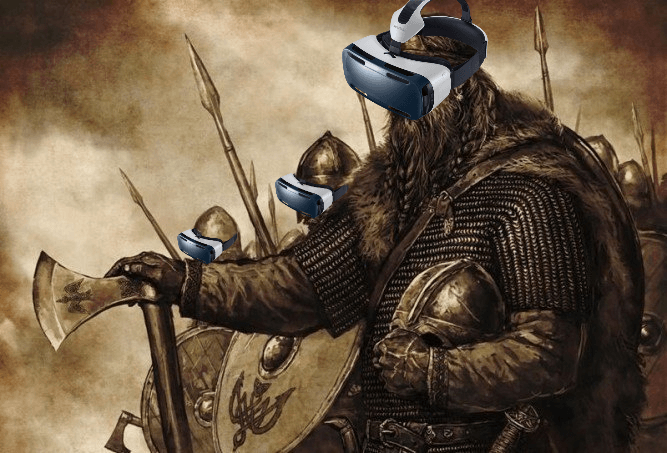

Papa Selo is a Croatian philosopher with an old soul. Aside from tending to his olive trees in the heart of Dalmatia, his singular passion is fjaka (doing absolutely nothing) in his village by the Adriatic sea.


Content creators in the video games and vlogging industries often dream up lofty ambitions for what their creations, characters and merchandise ought to achieve in popular culture. Sadly for them, it’s terribly simple for a virtual legion of dork-barbarians to repurpose that vision and utterly destroy it.
VRChat, a massively multiplayer social world that is accessible on both PC and virtual reality devices, is the latest platform to witness this sort of mega-trolling, culminating in the emergence of a super-viral tribe of goofy-looking hedgehogs speaking in a Ugandan accent.
Unfortunately for developers everywhere, and perhaps for politicians as well, this will not be the last time that the world is overcome by the spontaneous emergence of a social revolution dominated by tens of thousands of extraordinary visceral online trolls.
Inspiration for the Ugandan Knuckles Tribe was first drawn from a YouTube video posted 10 months ago by a cartoon animator named Gregzilla, during which an irregular-shaped animated Knuckles (a character from the video game Sonic the Hedgehog) sings a strange parlor song from the 1920’s. The meme began its slow albeit ultimately asymptotic ascent on September 15, 2017 when DeviantArtist tidiestflyer discharged a 3D model of Gregzilla’s Knuckles in an avatar format compatible with VRChat.
It has now been only two weeks since hordes of trolls began to burst into the game with these low-quality Knuckles avatars in order to provoke other VRChat players into total online submission. The game has become nothing but a humorous shit show, and the population of Social Knuckles Warriors does not seem to be decaying at any reasonable rate. Moreover, the designer of the original 3D model now apparently regrets he ever created it, lamenting that “VRchat has become a meme ground and I feel I have helped to dig [its] grave.”
The launch of Everquest in 1999 marked the beginning of the first massively multiplayer online role-playing games (MMORPGs). It took another 5 years for the industry to hit fever-pitch with the critically-acclaimed World of Warcraft, which saw 1.5 million paying subscribers in its first year. But it took another 8 years for the the internet’s first truly massively memorable troll in the form of Habbo Hotel’s “Pool’s Closed” meme, in which 4chan‘s /b/ (random) board began to spread rumors that some of the moderators on Habbo were abusing their powers to ban users who were using black avatars. Yet nineteen years in, almost nothing compares to the Ugandan Knuckles Tribe.

I managed to log onto VRChat today to see what all the buzz was about. I pulled out my Croatian banjo and very quickly captured an attentive audience by singing a traditional folk song that is popular in my ancestral village. My new entourage of Ugandan Knuckles apparently enjoyed the show, clucked in unison throughout, and requested several encores.
The experience was quite surreal and I found myself laughing uncontrollably for much of the my time online. I personally don’t play MMORPGs, but compared to my one feeble attempt at Second Life, I genuinely enjoyed my experience there. It was far less of a grind and much more of a genuine social experience than I had anticipated.
This seriously begs the question. How pervasive will this technology become, and how quickly? The promise of virtual reality has always been enormous, its ensuing popular explosion constantly touted as being just around the corner. But perhaps we really are only a few killer apps and global memes away.
If anything, now is the time to at least start thinking about the ways in which this new technology will come to shape our culture, our businesses and even our dating lives. Freelance writers and web developers, be warned! A simple Skype call may no longer be sufficient to impress prospective clients. And what about online dating? What does Tinder look like in such a world, and how will you stand out from the inevitable droves of thirsty beta digi-men, waiting and ready at every opportunity to fawn over their favorite Instagram model’s live 3D workout? Things to consider.
People in real life are starting to reminisce about, and experience FOMO, for events that took place in virtual reality. For many, the rise of the Ugandan Knuckles Tribe was the first time they wondered why they weren’t online instead of somewhere exciting offline so that they could take selfies for their social media profiles. Really think about that for a moment.
Two years ago, a close friend of mine decided to attend a local gathering for ROK’s International Meetup Day. Despite pleas from both the police and city councilors that “sensible” citizens keep their distance from the “misogynistic pro-rape group,” he decided to go anyway, innocently thinking that nobody would care and that he would get to enjoy a beer with some fellow forum members.
Unfortunately, there happened to be a mole in the group. A crew of SJWs showed up in full camera gear, with spot lights and all, exposing him and the other men. A photo of him was captured and spread all over social media in my city. This is a true story.
Roberto was a typical, down-to-earth Italian guy who loved to work out, play soccer, and meet girls. For more than a year after that incident, he could barely leave his home. On a few occasions, for instance on a walk with his dog through the park, he we was certain that someone had recognized him and although they kept a safe distance, he was convinced that he was being intentionally followed. Whether it was irrational paranoia or hyper-vigilant caution, he had no longer any peace of mind and so eventually decided to relocate to another city.

While social media was definitely a massive and largely unexpected outgrowth of Web 2.0, I do not think that we are anywhere near prepared for what is coming in terms of the immersive virtual worlds of Web 3.0. There is something to say about the way VRChat combines intimate virtual space, 3D audio, and simple, congruent character animations in a way that none of its predecessors have done before it. Despite the fact that you do not require a head-mounted display and virtual reality device to access it (and I don’t own one), I still feel more engaged in that space than in any MMORPG or online chat platform that I have experienced up until now.
What the Ugandan Knuckles Tribe ultimately shows us is that a loosely-organized collective of manic edge lords can turn a simple creed (“Da Wey”) into a worldwide phenomenon, producing tens of millions of views on YouTube and thousands of highly-engaging memes in little over a week. This is quite different, not only in kind, but also in form compared to traditional trolling methods. Although I have no intention of riling up the horde, following this space will be an important part of regular online interaction in the coming year. I think it’s worth paying attention.

While it is true that Twitter played a major role in the election of Donald Trump, conservatives in North America have had less impact spreading their message elsewhere online. It is therefore probably worth considering whether the memetic potency of Trump’s campaign may have been a fluke; the call was quite close and the opposition will likely be better prepared next time around. If the #WomensMarch goes viral in virtual reality, how will conservatives respond?
In light of these new developments, I propose a very tenuous suggestion, that at the discretion of ROK leadership and readers, of course, perhaps the next INTERNATIONAL ROK MEETUP DAY should be held next month, on FEBRUARY 6, 2018, in VRChat. The first meetup was planned just one month prior to its intended date, and the international firestorm it generated was unparalleled, more so than even the influence of our eponymous, now famous Ugandan Knuckles Tribe.
There is a reason we sought to meet in person at the time, as opposed to merely continuing to foster our relationships on the forums as usual. The kind of camaraderie engendered in physical space is currently not entirely replicable in the digital world, even on YouTube live streams. “Caller?, caller?” Although VR is beginning to emulate social omnipresence much better, it may be prescient to note that the mainstream adoption of cryptocurrencies and the creation of decentralized, blockchain-based virtual spaces may possibly make physical meet ups totally redundant soon anyway.

Oxytocin is a chemical compound that evolved to increase trust and generosity between mammals. But our technological systems are constantly evolving ways to disintermediate the need for trust at all, over larger and larger geographical territories every few years. Uber and AirBnb were just the beginning. In a world where we can arm ourselves with memes and whatever else, purchased with cryptocurrencies that allow us to safely and securely distribute those goods to our closest allies wherever need may be, does it really matter at all what we look or smell like (no homo), or how far apart we might be living?
Years ago, I predicted the Rise of the Ratchets. Today, I am predicting the rise of the VR Sociopolitical Movement, which seems to be on course to grow quite rapidly in 2018. For trust me, my bruddas, VR is the De Way. In fact, the Red Pill is De Only Way. May we Spit on the False Feminist Queen of the SJW Devil Horde fo’eva more. Chwwpppft. Chwwpppft. Chwwpppft. Come on and join me.
Read More: The Rise Of The Ratchets
{kind=link}